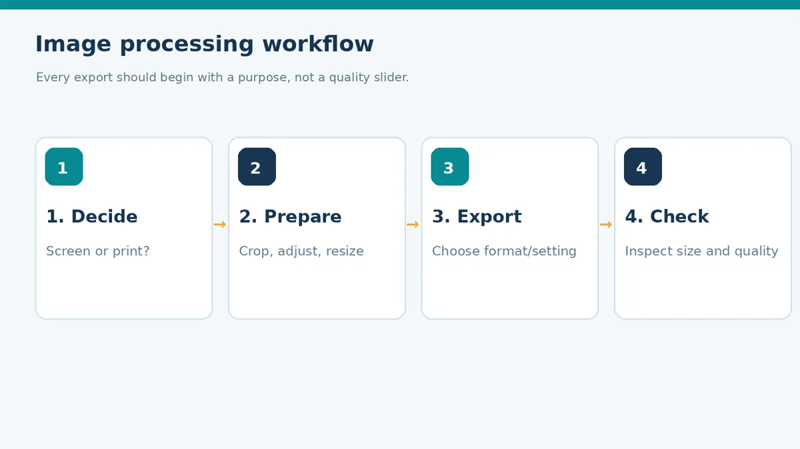
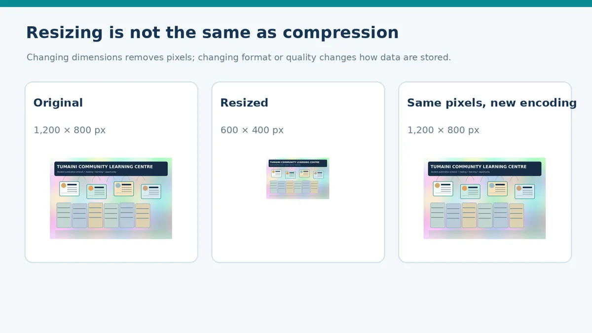
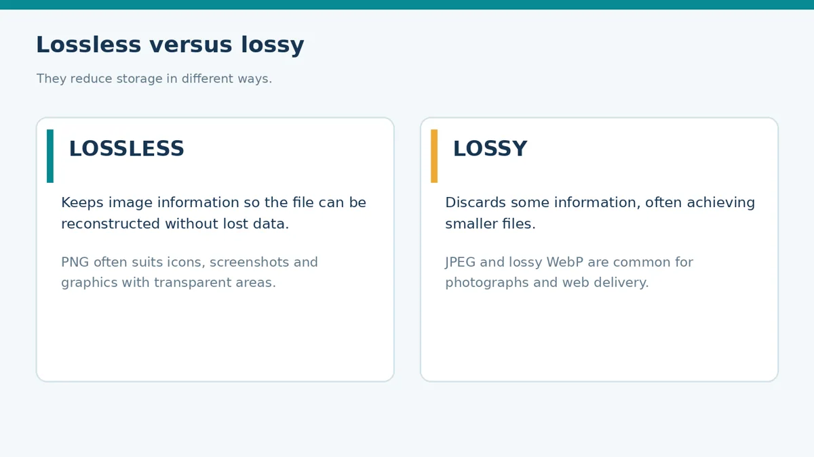
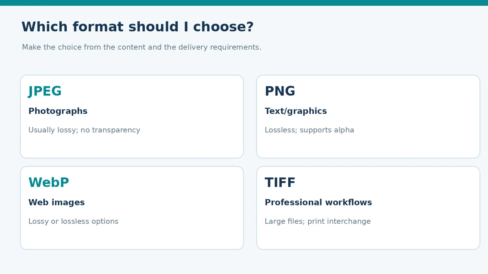
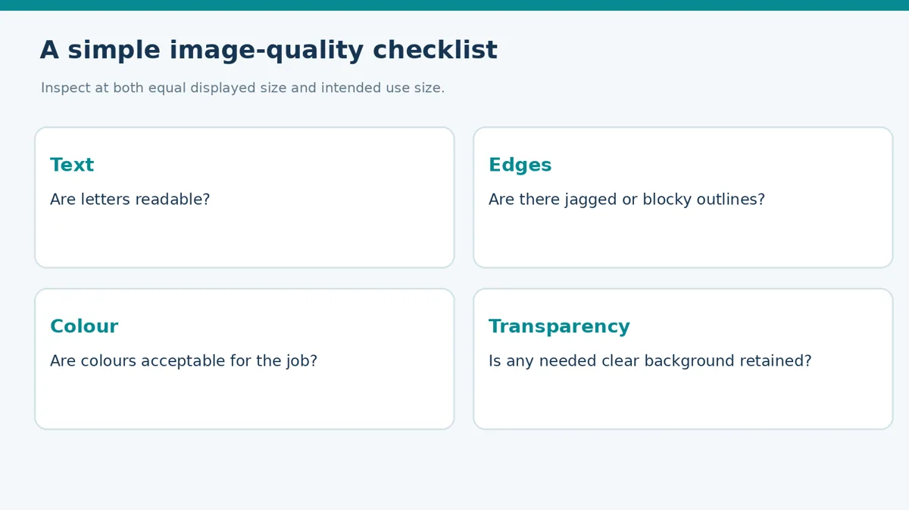

Image Processing and Compression
Compare image formats, calculate compression and select suitable exports.
Lecture notes
An image for a printed hand-out does not always need the same settings as an image sent through a mobile phone. Image processing helps us prepare suitable visual content, while compression makes the resulting file more practical to store and distribute. The aim is not to make every file as small as possible: it is to preserve the detail and meaning needed for its intended use.
Learning outcomes
- Explain image processing and describe a simple processing workflow.
- Distinguish cropping, resizing and compressing a digital image.
- Compare lossy and lossless compression and common image formats.
- Calculate percentage file-size reduction and compression ratio.
- Evaluate image quality and select suitable exports for digital and print use.
1. Understanding image processing
Image processing refers to operations carried out on a digital image to change, improve, analyse or prepare it for a particular purpose. In desktop publishing, common operations include cropping unwanted edges, adjusting brightness or contrast, resizing an image to fit a layout, sharpening cautiously and exporting a suitable final file. These activities should follow the needs of the publication.
A sensible workflow begins by deciding where an image will be used. For the Tumaini “Stay Safe Online” hand-out, we first check that the intended photograph is clear and relevant. We may crop it to suit the layout, correct obvious exposure problems, and choose export settings that preserve legible details. For a phone announcement, a smaller file may be more important, provided it remains clear on a typical screen.

Figure 1. A straightforward processing workflow for preparing publication images.
2. Pixels, dimensions and resizing
Raster images consist of pixels arranged in a grid. Image dimensions such as 1,200 × 800 pixels describe the number of pixels across the width and height; they do not, on their own, state how large the image should print. Enlarging a raster file far beyond the amount of available detail can make edges and fine text look soft or blocky.
Cropping removes areas outside a selected boundary. Resizing changes the pixel dimensions, such as reducing a 1,200 × 800 pixel image to 600 × 400 pixels. Resampling is the calculation of a new pixel grid during resizing. Compression, however, concerns how the image information is encoded and stored; it may change file size without changing pixel dimensions. This distinction matters when comparing exports.

Figure 2. Resizing pixels and changing encoding are different operations.
3. Lossless and lossy compression
Compression reduces the number of bytes required to represent an image. Lossless compression keeps enough information for exact reconstruction of the stored image. PNG uses lossless compression and is often useful for graphics containing crisp edges, screen captures or transparent areas. Lossy compression discards some information; it can make files substantially smaller but may introduce unwanted blocks, halos or a loss of fine detail.
JPEG commonly uses lossy encoding and is often appropriate for photographs. WebP supports both lossy and lossless modes, depending on export settings. When comparing two JPEG quality settings, examine the same image area at the same size. Quality numbers are encoder settings rather than universal percentages, so different programs can produce different results.

Figure 3. The difference between lossless and lossy approaches.
4. Choosing an image format
Select a format by considering image content, transparency, audience, compatibility and output method. JPEG is often convenient for photographic images shared online. PNG is suitable where transparency or crisp flat graphics is important. WebP can make compact web images, but the intended software and audience must support it. TIFF may be used in some high-quality image and print workflows, although large files and individual print-provider requirements must be considered.
The editable Photoshop PSD remains a working source. It is not interchangeable with the exported image intended for placement, printing or sharing. Similarly, an Illustrator SVG remains vector-based and can be useful for scalable icons; an exported PNG of the same icon is raster-based.

Figure 4. Common format choices in basic desktop publishing.
5. Measuring compression
File size is measured in bytes. One kibibyte (KiB) equals 1,024 bytes. For an original file size O and a new file size N, calculate the percentage reduction as ((O − N) ÷ O) × 100. A compression ratio may be written O : N. For example, reducing a file from 800 KiB to 200 KiB produces a 75% reduction and an original-to-new ratio of 4:1.
In the supplied practical files, the original 1,200 × 800 PNG is approximately 712.8 KiB, while the JPEG Q55 export is approximately 47.7 KiB. Using the unrounded measured bytes gives a reduction of approximately 93.3%. Both have the same pixel dimensions, so the reduction is primarily associated with encoding and the different output format, not a reduction in width or height.
6. Evaluating image quality
A compression result should be evaluated against a real use. For a photograph, inspect visible detail, the smoothness of colour transitions and any obvious artefacts. For an image containing lettering or sharp edges, check whether the text remains readable. Do not compare a smaller image displayed at a different magnification and conclude that compression alone caused every difference.
When printing, also consider effective pixels per inch (PPI). At 150 mm printed width, a 1,200 pixel-wide image has effective PPI = (1,200 × 25.4) ÷ 150 = 203.2. That may be adequate or inadequate depending on the printer, viewing distance and particular image; it is not a universal pass or fail value. Always verify the receiving print specification.

Figure 5. A simple checklist for assessing image suitability.
7. Applying the ideas to a publication
For the Tumaini “Stay Safe Online” hand-out, keep a clear original file and create separate exports for each use. A small online announcement may use an appropriately sized JPEG or WebP. The image in a printed hand-out should retain sufficient detail at its final dimensions. The transparent lightbulb icon should be kept as editable vector artwork where possible, or exported in a format that preserves transparency.
The smallest file is not always the best file. The appropriate choice is the smallest practical output that still meets the publication’s needs. Record the format, pixel dimensions, file size and visible result so that your choice is supported by evidence.
Review questions
| Concept checks | Application checks |
|---|---|
| 1. Explain image processing and state three common operations. | 4. Calculate the percentage reduction when 600 KiB becomes 150 KiB. |
| 2. Distinguish resizing from compression. | 5. Why might a transparent icon require a different file format from a photograph? |
| 3. Why can a JPEG be smaller than a PNG of the same picture? | 6. Give three image-quality checks for a printed hand-out. |
Key terms for revision
| Term | Meaning |
|---|---|
| Image processing | Preparing or improving an image for its intended use. |
| Resizing | Changing the width or height in pixels. |
| Lossless | Compressing without discarding stored image information. |
| Lossy | Discarding selected information to reduce file size. |
| Compression ratio | Original file size compared with new file size. |
| Transparency | Parts of a graphic without an opaque background. |
Independent application
Your class needs one image for an A4 printed hand-out, one smaller version for a mobile announcement and a lightbulb icon with a clear background. For each use, choose a suitable format, name one quality check, and explain why the smallest possible file is not always the right choice.
Simple practical activity
Compare three image exports
Open three supplied versions of the same picture. Record their sizes, calculate the percentage reduction for one export and select the best version for a phone and for a printed hand-out.
Read the full guided practical instructions
Task: compare image formats and choose suitable outputs for the Tumaini “Stay Safe Online” hand-out. You may use Photoshop, GIMP, an image viewer or the supplied images and measurement table. Keep the working source unchanged.
Part A. Establish the purpose
| Destination | What matters most? |
|---|---|
| Phone announcement | |
| Printed A4 hand-out | |
| Transparent educational icon |
Part B. Compare measured files
Open the supplied “Measured_File_Results.csv” or use your file manager. Examine the following versions of the same 1,200 × 800 image.
| File | Size (KiB) | Visual observation |
|---|---|---|
| Original PNG | 712.8 | |
| JPEG Q90 | 159.4 | |
| JPEG Q55 | 47.7 | |
| JPEG Q25 | 32.0 | |
| WebP Q70 | 20.6 |
The sizes are rounded values measured from the provided files. Your figures may differ if you export the image again with other software.
Part C. Calculate and explain
1. Calculate the percentage reduction from 712.8 KiB to 47.7 KiB. Show the formula and working.
Working: ________________________________________________________________________
___________________________________________________________________________________
2. Calculate the compression ratio from 800 KiB to 200 KiB.
Working: ________________________________________________________________________
3. Compare JPEG Q55 1,200 × 800 with the resized JPEG 600 × 400. Why would this not be a fair compression-only comparison?
___________________________________________________________________________________
Part D. Inspect visual quality
1. Which export keeps text and fine edges clearest in your viewing test?
___________________________________________________________________________________
2. In which image do you first notice compression artefacts? Explain.
___________________________________________________________________________________
3. Why could an opaque JPEG be unsuitable for the transparent lightbulb icon?
___________________________________________________________________________________
Part E. Recommend and submit
| Publishing need | Chosen file and reason |
|---|---|
| Phone announcement | |
| Printed hand-out | |
| Transparent icon |
Submission: completed worksheet, chosen exports or a list of their exact filenames, and a short statement explaining one trade-off between image quality and file size. A written comparison using supplied files is acceptable when image-editing software is unavailable.
Review questions
Try explaining each answer in your own words before using the quiz.
- Distinguish resizing from image compression.
- Explain lossy and lossless compression.
- A file shrinks from 600 KiB to 150 KiB. Calculate its percentage reduction.